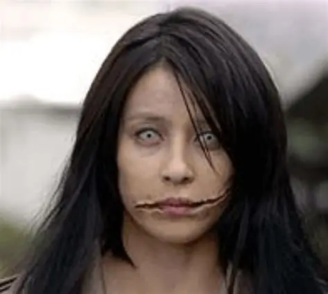

La leyenda de Kuchisake-onna, o la "Mujer de la Boca Cortada", es una de las historias más aterradoras del folclore japonés. Se dice que aparece por las noches, especialmente en tardes nubladas o callejones solitarios, vistiendo un abrigo largo y cubriendo su rostro con una máscara quirúrgica, algo común en Japón para evitar enfermedades, lo que le permite ocultar su secreto hasta el último momento.
Cuando encuentra a una víctima, generalmente jóvenes o niños, les detiene y les hace una pregunta inquietante: "¿Soy hermosa?". Si la persona responde que sí, ella se retira la máscara, revelando una boca cortada de oreja a oreja en una sonrisa macabra y sangrienta, para luego preguntar de nuevo: "¿Y ahora?".
Si la víctima grita o dice que no, ella la asesina instantáneamente con unas enormes tijeras. Si vuelve a decir que sí, ella le cortará la boca de la misma manera para que "sea tan hermosa como ella". Según la tradición, la única forma de escapar es darle una respuesta ambigua como "eres normal" o lanzarle dulces de caramelo duro (bekko ame) para distraerla y poder huir.
El origen de este espíritu se remonta al período Heian, donde se dice que fue una mujer hermosa pero vanidosa que fue castigada por su esposo tras una infidelidad. Él le cortó la boca gritando: "¿Quién pensará que eres hermosa ahora?". Desde entonces, su espíritu vaga por el mundo moderno, alimentándose del miedo y la vanidad de quienes cruzan su camino.